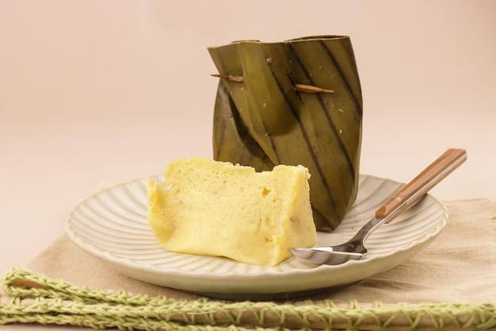

Barongko is a traditional food in South Sulawesi, especially for the Makassar and Bugis tribes. In the Makassar language, Barongko is an abbreviation of "BARangku ONGjhi kuroKO", while the Bugis tribe calls it BAROKO "BARangku mua udoKO" according to their respective languages, which means "my own things that I wrap". This implies that it reflects the importance of the value of "siri" (self-esteem) in the Bugis-Makassar society, where the practice of wrapping and protecting something is considered a form of preserving an individual's dignity and honor.
Make sure the bananas used are perfectly ripe to get a sweeter taste and soft texture.